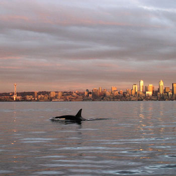

Orca SmilesHello and welcome to my webpage all about Orca Whales! My name is Ashly Wilkins and I am a sophomore at Manhattan College in New York City. I am orignially from Seattle, Washington which I believe contributes greatly to my love for the sea and all of the creatures that live in it. There is something about the depths of the unknown that thrills me just as much as it frightens me. I have always been extremely interested in the two great animals of the sea, the Greath White Shark and the Killer Whale. As a child I always wanted to go to Seaworld but I remember coming to tears the moment I stepped in seeing such beuatiful creatures in such small tanks. I had waited forever to see a show and I sat there complaining about their lifestyle the whole time. I was only 12 then and much has changed since my visit to SeaWorld in San Diego, California. I made this page to let people know what the life of an Orca whale should be like and how devistating it is when you really see how they live in captivity. I have watched the movie Blackfish a number of times I cannot keep track of. I also spend a lot of time reading articles and books about killer whales. I am looking into a couple of orginizations and research groups that I would like to join for I think it is impoirtant to become more involved in the things you care about. There is something about the way an Orca whale looks at you in the wild with that smile in their eye that you will never forget. It is something so powerful, something that hits so close to the heart that you could never understand why someone would inflict pain on such a playful and sweet mammal. I am hoping that by creating this webpage, others too will feel inspired to sign a petition, buy a shirt for a cause, or just understand what orcas in captivity truly have to endure and why it needs to end. All I needed was to see the smile so far faded from the eye of "Shamu" to know that things weren't right. They have entertained us for years, it is time to set them free. We should show the appreciation for who they are by letting them live as they should. Every Orca Deserves To Smile |